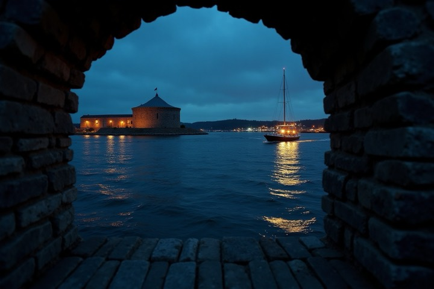

Koh Pha-ngan, Inselrunde
41,8 km · 12 Aufnahmen · 3. August
Die Bibliothek ist die erste Seite nach dem Anmelden und die einzige, die jeder Nutzer täglich sieht. Sie kann heute zwei Dinge weniger als die Zeile darunter: aus der Kachel lässt sich weder löschen noch ein Video exportieren. Dazu kommt, dass sich das Titelbild im Web überhaupt nicht wählen lässt. Und beim Überfahren bewegen sich sechs Dinge gleichzeitig.
Diese Datei zeigt den Stand nach drei Sitzungen: die Kachel ist entschieden und steht oben als Vergleich, Liste, Lösch-Muster und Bildwähler stehen mit Empfehlung zur Wahl. Jede Variante ist anfassbar. Der Video-Export ist inzwischen dazugekommen und deshalb überall mitgeführt: Er ist keine neue Entscheidung, sondern eine Aktion, die den Weg an die Kachel noch nicht gefunden hat.
Die Linie, an der alles Weitere gemessen wird: Das ⋯-Menü verwaltet die Tour als Eintrag: Name, Sichtbarkeit, Link, Titelbild, Löschen. Der Editor bearbeitet den Film: Schnitt, Kamera, Wetter, Musik, Modi. Und beide Ansichten tragen dieselben Aktionen unter denselben Namen: Dass die Zeile heute löschen und exportieren kann und die Kachel nicht, ist der Fehler, der hier verschwindet. Er entsteht immer wieder neu, weil eine neue Aktion in der Zeile billiger unterzubringen ist als auf der Kachel.
Vier Fragen standen zur Wahl (Menü-Inhalt, Signet, Play-Taste, Sichtbarkeit), jede mit drei bis vier Antworten. Sie stehen einzeln durchgespielt in Runde 1b. Das Ergebnis ist M2 · G2 · P1 · S2: ein einziges Zeichen oben rechts, ein Signet, das stillsteht, die Play-Taste bleibt (sie ist das einzige benannte Abspiel-Ziel für Tastatur und Screenreader), und die Sichtbarkeit zieht zu den Fakten in den Fuß.
Sechs bewegte Dinge beim Zeigen. Löschen und Video-Export gibt es nur in der Zeile.
Drei bewegte Dinge, die Taste nur noch minimal. Das ⋯ öffnet alles Weitere; anklicken.
| Frage | Bestand | Vorschlag | Was sich dadurch ändert |
|---|---|---|---|
| Menü-Inhalt | Stift + ⋯, Menü wiederholt beides | nur ⋯, Menü vollständig | ein Zeichen statt drei; der Rechtsklick kann dasselbe Menü öffnen |
| Signet | wächst 64 → 80 px | steht fest, Linie zeichnet nach | die auffälligste Layout-Bewegung fällt weg |
| Play | Taste wächst aus scale(0.82) | bleibt, wächst aus 0,94 | das benannte Abspiel-Ziel bleibt, die Unruhe geht |
| Filmdauer | liegt in stats.filmS, wird nicht gezeigt | im Fuß, als Angabe ohne Griff | „6:20 · 41,8 km · 12 Aufnahmen", auch auf Touch sichtbar |
| Sichtbarkeit | Glaspille über dem Bild | Chip bei den Fakten | steht bei ihresgleichen, die Ecke wird frei |
| Löschen | nur in der Zeile | im ⋯-Menü, mit Dialog | siehe Wie wird gelöscht? |
| Video-Export | nur in der Zeile | im ⋯-Menü, öffnet dasselbe Export-Blatt | die Aktion gibt es längst, nur nicht an dieser Kachel |
:focus-visible setzt opacity: 1),
sonst springt der Tastatur-Fokus in etwas Unsichtbares; mit der Tab-Taste auf einer
Kachel nachprüfbar. Und stats.filmS ist optional: Touren, die seit
dem Video-Export nicht neu gerendert wurden, tragen keine Filmdauer. Der Fuß zeigt
dann km und Aufnahmen, ohne Lücke davor.
Nicht die Taste war die Unruhe, sondern ihr Wachsen. Drei Stufen, alle drei fertig gebaut; der Unterschied ist nur die Einblendung. Auf jede Kachel zeigen.
Die Taste wächst spürbar. Auf einer langen Liste ist das die Bewegung, die beim Überfahren am meisten auffällt.
Dieselbe Geste, aber aus 0,94: Man sieht, dass etwas erscheint, ohne dass es zuckt. Die Ansage bleibt, die Unruhe geht.

Keine Größenänderung, nur Deckkraft 0,34 → 1. Die Kachel sagt auch ohne Zeiger, dass sie abspielt — der einzige Zustand, den ein Handy je sieht.
Die Kachel beantwortet „welche Reise war das?" — das Bild trägt sie. Die Liste wird für die andere Frage gewählt: vergleichen und aufräumen. Also gehören dort Zahlen hin, die untereinander stehen, und Aktionen, die man in Serie ausführt.
Echte Spalten, Zahlen rechtsbündig mit tabular-nums: 41,8 steht unter
6,2, und der Unterschied ist auf einen Blick zu sehen. Die Spaltenköpfe sortieren
und ersetzen damit das Sortier-Auswahlfeld im Kopf — man sortiert dort, wo die
Werte stehen. Die Zeile ist ganz klickbar (Abspielen, die Miniatur sagt es mit
einem Play-Schleier), die Werkzeuge rechts erscheinen beim Zeigen —
ihr Platz ist aber immer reserviert, sonst rutschen die Spalten und die
Tabelle wackelt Zeile für Zeile.
Kein Tabellenraster, sondern eine großzügige Zeile: Miniatur mit Routen-Signet, Titel in Anzeigengröße, darunter die Fakten als Kette mit Zeichen (Fortbewegung, Strecke, Aufnahmen, Filmdauer). Rechts eine Werkzeugleiste, die beim Zeigen von rechts einläuft. Das ist die Liste für jemanden, der trotzdem noch am Bild erkennt, welche Tour gemeint ist — und der Zustand „entsteht gerade" hat hier endlich Platz (unterste Zeile).
Dichteste Form: eine Zeitachse links, Monatsköpfe als Zwischenüberschriften. Touren sind Ereignisse mit Datum — wer eine bestimmte sucht, weiß meistens noch „irgendwann im Juli". Erst ab etwa 20 Touren ist der Gewinn größer als der Preis (die Sortierung ist dann faktisch auf „nach Datum" festgenagelt: nach Strecke sortierte Monatsgruppen ergeben keinen Sinn).
Drei Muster, gemessen an der Randbedingung: der Server löscht hart, samt aller Fotos und Videos. Ein Wiederherstellen gibt es nicht.
Empfohlen. Zeigt, was verschwindet — Titelbild, Titel, Zahl der Aufnahmen — und benennt die Folge. Bei öffentlichen Touren kommt die Zeile über den toten Link dazu.
Der Film, die Aufnahmen und die Aufzeichnung werden vom Server entfernt.
Der Bestand in der Liste: erster Klick schärft, zweiter löscht, nach 3,5 s entschärft sich der Knopf. Schnell und ohne Unterbrechung — sagt aber nichts darüber, was verlorengeht, und ist auf Touch ein Doppeltipp an derselben Stelle. Gut für die Kachel-Variante B, nicht für eine 400-MB-Reise. Ausprobieren:
Geht hier nicht — und das ist die wichtigste Erkenntnis dieses
Abschnitts. Der Toast verspricht eine Umkehr, die der Server nicht kann: die
Medien sind dann bereits gelöscht. Machbar wäre er nur mit einem echten
Papierkorb (Tour auf geloescht_am setzen, Dateien erst nach 30 Tagen
entfernen) — das ist eine Server-Entscheidung, keine Oberflächen-Frage.
Der eine Menüpunkt, der ein eigenes Fenster öffnet, und Bildwähler haben die Angewohnheit, zu wachsen (Zuschnitt, Fokuspunkt, Helligkeit, Filter …). Drei Bauformen von leicht nach schwer, damit die Grenze sichtbar wird, ab der es kein Menüpunkt mehr ist. Ein Befund vorweg: Im Web kann man das Titelbild heute überhaupt nicht wählen. Das Feld gibt es, der Server respektiert es, gesetzt wird es nur von der Android-App. „Dem Editor überlassen" hieße also, es weiter niemandem zu überlassen.
Der Menüpunkt öffnet kein Fenster, sondern ersetzt das Menü durch einen Bildstreifen — dieselbe Stelle, dieselbe Größe. Charmant bei fünf Bildern. Bei zwölf oder dreißig wird es zum Nadelöhr: horizontales Scrollen geht mit dem Mausrad nur mit Zusatztaste, und man sieht nie mehr als vier Bilder gleichzeitig — genau das, was man beim Vergleichen braucht.
Ein Fenster, ein Raster, ein Klick. Vier Dinge, die es leisten muss — und die alle Anzeige sind, keine Werkzeuge:
1 · Jede Kachel zeigt den echten Beschnitt. Das Titelbild erscheint überall im
Format 16:10; ein Hochkantfoto verliert dabei oben und unten. Wer das volle Foto zur
Wahl stellt, lässt jemanden ein Bild wählen, das er so nie zu sehen bekommt — deshalb
hat jede Kachel im Wähler dasselbe Seitenverhältnis wie die Bibliothekskachel, und
Hochformate tragen ein Zeichen.
2 · „Automatisch" muss zurückführbar sein — heute wählt der Server
(bestimmeCover), und wer einmal von Hand gewählt hat, muss dorthin
zurückkönnen.
3 · Videos gehören dazu (sie liefern ein Standbild) und sind als solche
erkennbar.
4 · Auch Aufnahmen ohne Ort stehen zur Wahl — sie sind im Film nicht platziert,
als Schaufenster aber oft die besten. Sie stehen in einer eigenen Gruppe, damit klar
ist, warum sie im Film nicht vorkommen.
Das Bild steht in deiner Bibliothek, in der Galerie, auf deinem Profil und in geteilten Links. Ausschnitt wie hier gezeigt.
Dieselbe Aufgabe, aber jeder naheliegende Wunsch ist erfüllt: Suche, Reiter für Fotos und Videos, Zuschnitt-Rahmen, Fokuspunkt, Helligkeit. Jede einzelne Zutat ist zu rechtfertigen — zusammen ist es kein Menüpunkt mehr, sondern ein Editor-Panel, und dann gehört es auch dorthin. Das ist die Grenze, die Ihre Frage gemeint hat.
V2, und das Titelbild bleibt im Menü. Der Wähler besteht ausschließlich aus Anzeige — Raster, Beschnitt-Vorschau, drei Zeichen, ein Häkchen. Er hat kein einziges Werkzeug, das den Bildinhalt verändert; genau daran hängt, ob er leicht bleibt. Die Regel für später ist damit auch gesetzt: Kommt ein Wunsch, der das Bild selbst verändert (Zuschnitt, Fokus, Helligkeit), gehört er in den Editor — nicht in diesen Dialog.
| Bauform | Größe | Bei 30 Aufnahmen | Zeigt den Beschnitt | Bleibt Menüpunkt |
|---|---|---|---|---|
| V1 — Streifen | ~330 × 150 px | horizontales Scrollen | nur klein | ja |
| V2 — Dialog | 660 px, Raster 4× | Scrollen, 12 auf einen Blick | ja, 16:10 wie die Kachel | ja |
| V3 — Panel | 720 px + Seitenspalte | ja | ja | nein — das ist der Editor |
| Punkt | Stand heute | Nötig |
|---|---|---|
| Medienliste | api.tour(id) liefert das Tour-JSON samt media[].thumb (Kachel-Fassung) |
kein neuer Endpunkt — ein Aufruf beim Öffnen des Dialogs |
| Wahl speichern | edits.titelbild existiert, wird aber nur von der Android-App geschrieben |
Web-Weg dorthin — dieselbe Overlay-Änderung wie in der App |
| Sofort sichtbar | cover/cover_thumb der Tour-Zeile entstehen beim Rendern |
direkt mitschreiben (Muster: bildnachtrag.ts) — ein Re-Render für eine Bildwahl wäre absurd |
| „Automatisch" | bestimmeCover wählt ohne titelbild selbst |
Feld löschen genügt — der Rückweg ist geschenkt |
| Gelöschte Medien | editmodell.ts:364 räumt ein titelbild auf, das ins Leere zeigt |
bereits gelöst |
Der Vorschlag im Ganzen: die ruhige Kachel (M2 · G2 · P1 · S2 · F2), Liste L1, Lösch-Dialog 1 und der Bildwähler V2. Vier Stücke, die unabhängig voneinander gebaut werden können; nur das Menü ist die Voraussetzung für zwei davon.
| Stück | Hängt ab von | Stand heute |
|---|---|---|
| Ruhige Kachel | nichts | reine Oberfläche: ein Zeichen weniger, zwei Übergänge weniger |
| ⋯-Menü | nichts | neu — trägt Abspielen, Bearbeiten, Umbenennen, Link, Titelbild, Löschen |
| Löschen aus der Kachel | Menü | Route existiert; der Dialog ist neu |
| Filmdauer im Fuß | nichts | stats.filmS kommt schon mit; nur der Fall „fehlt" braucht einen Zweig |
| Video-Export aus der Kachel | Menü | Export-Blatt existiert (oeffneExportBlatt); es fehlt nur der Weg dorthin |
| Ortszeile in der Liste | Server | die Namen sind bekannt, stehen bisher nur im Player |
| Sortierende Spaltenköpfe | nichts | ersetzt das Sortier-Auswahlfeld im Kopf |
| Titelbild-Wähler | Menü | kein neuer Endpunkt; edits.titelbild existiert, der Web-Weg dorthin fehlt |